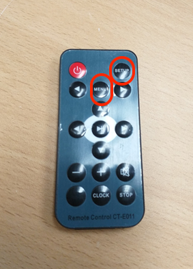
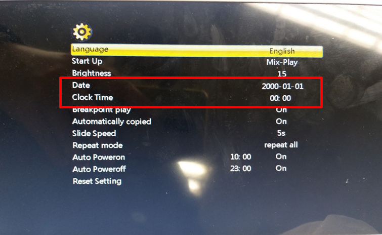

ADMILL
기기가 10초정도 송출되고 꺼집니다.
TIP
광고 운영시간은 10:00 ~ 22:00 입니다.
※ 광고 기기설정 시간이 운영시간 이외로 잘못 설정되어 있을 경우 화면 꺼짐
STEP1. 준비물: 리모컨

STEP2. 리모컨을 기기 화면에 대고 menu 클릭
STEP3. 현재 시간,날짜 맞추고 리모컨에 set up버튼 클릭

END.
<<이전으로
>>처음으로